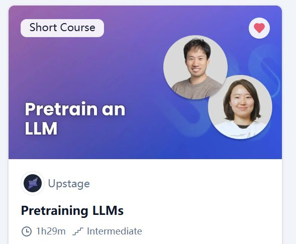
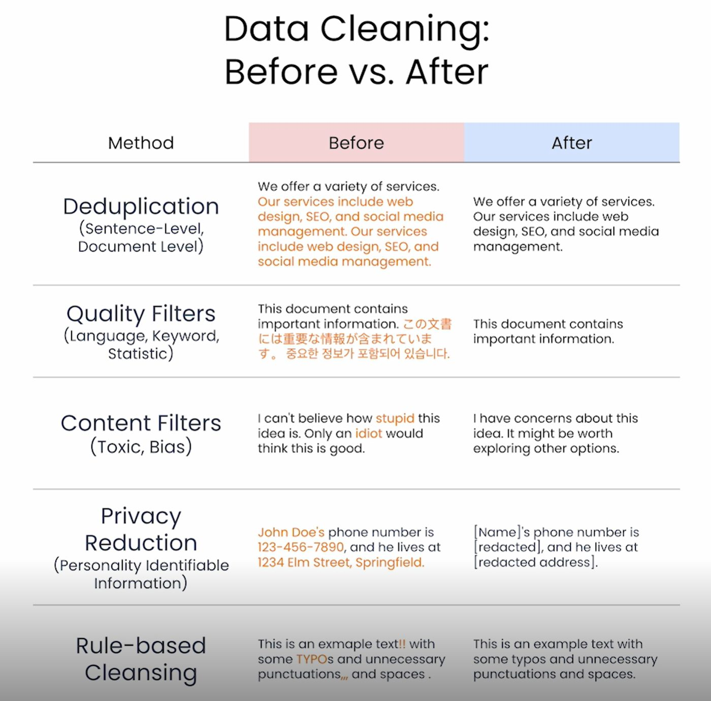
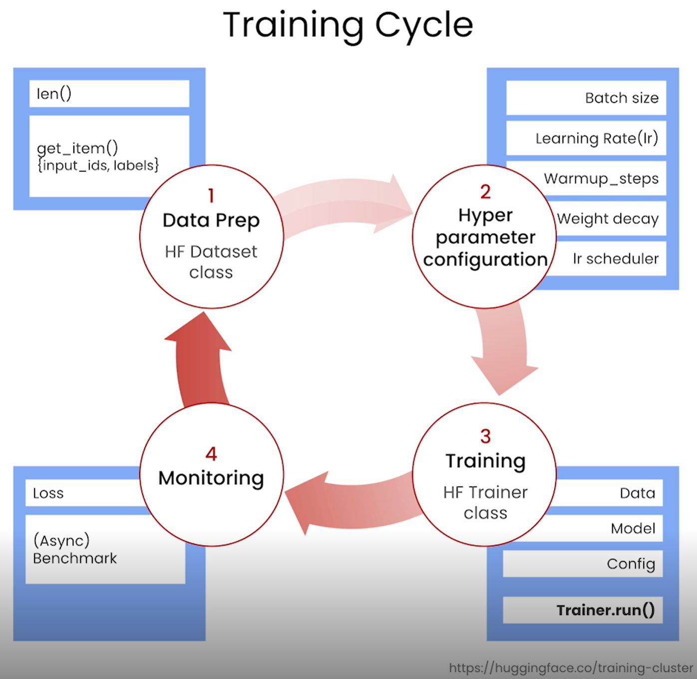
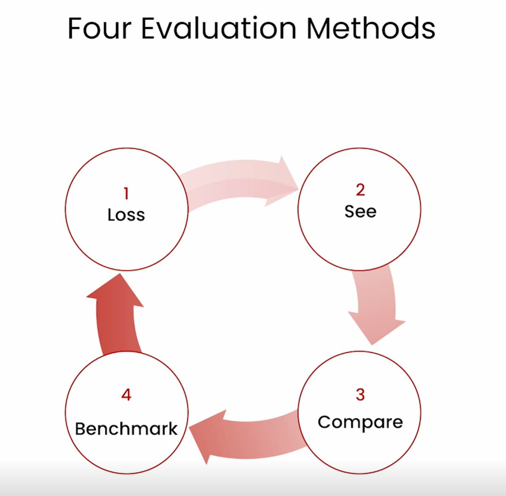

Learning Record 05
Pretraining LLMs

网站：Pretraining LLMs - DeepLearning.AI
收获：（直接把学习时的记录搬过来了，然后简单修改了一下，偷懒了）
（关于这门课让我对transformer架构开始有点兴趣）LLMs 预训练确实挺有意思的啊，我感觉要是想学transformer架构就应该从应用入手，数学这种东西得感兴趣了再去了解会更好。
（本门课具体收获）
1.了解了关于预训练的重要性（或者说在一些情形下预训练有用）
2.看了数据怎么准备（Data Preparation），包括从Hugging face上直接用已有的数据集，还有自己爬取github上的代码，最后合并。还有一个很关键的过程，数据清洗（Data Cleaning）

3.
看了怎么把数据打包(Data Packaging)，让数据能够直接用来训练，包括把数据分块（可以实现多机器或多卡同时训练），把text转成token ID，然后先序列化（concatenate），再转正特定的形状（有一个小细节，会丢弃对于当前形状不整除的一部分，比如32尺寸，33个token，就会丢掉1个），最后转成能直接输入的model训练的数据。
4.
关于模型权重初始化也挺有意思的，其实主要讲的就是模型权重初始化，在这一步之前是模型配置，这个到比较简单（可以掉包，用已经配好的架构），
说了如下初始化方法
1.随机初始化
2.用已有的预训练权重
3.Downscaling from a general pretrained model(去掉已有预训练好的模型的一些层)
4.Depth Upscaling from a general pretrained model（用已有预训练模型，复用已有层来搭更多的层次）
5.
接着了解了模型的具体训练，因为这里涉及太多框架性的东西，所以主要还是理解流程，而流程是比较好理解的，类似加载模型，加载数据集，配置训练参数，开始训练，监督损失等

（但是接口还是很恶心的）
6.
最后了解了关于LLM model的Evaluation，提了一些常用的benchmark(不知道几年前的视频了)，示例跑了一个benchmark，
Eg:（虽然这里还是用了别的测评框架）
!lm_eval --model hf \
--model_args pretrained=./models/TinySolar-248m-4k \
--tasks truthfulqa_mc2 \
--device cpu \
--limit 5

结语：开心！有完成了一门课的学习，虽然依旧是short courses，但是依旧花了我不少时间（喜欢上short courses，喜欢有code examples）